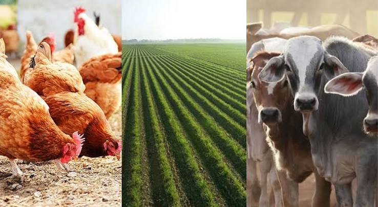

Farming Information, Crop Diseases and Weather Forecast
Helping Nigerian farmers access useful farming information, report crop problems and prepare for changing weather conditions.

To help farmers make better farming decisions by providing agricultural information, crop disease awareness and rainfall forecasts.
Prepare your soil properly before planting.
Choose healthy seeds suitable for your location and season.
Provide crops with sufficient water based on their needs and the weather conditions.
Inspect your farm regularly and remove weeds that compete with crops for nutrients and water.
Use suitable manure or fertilizer based on your soil conditions and crop requirements.
Signs include holes in leaves and damage to the central whorl of maize plants.
Signs include yellow and green patches on leaves, leaf distortion and stunted growth.
Signs include spindle-shaped spots on leaves with grey centres and dark edges.
Watch for unusual leaf spots, yellowing, wilting and rotting fruits.
Note: These symptoms can have different causes. Consult an agricultural extension officer for proper diagnosis and treatment recommendations.
Are your crops showing unusual signs? Describe the problem and upload a picture to help document what is happening on your farm.
Enter your town or village to check the predicted rainfall for the next seven days.
Weather forecasts are estimates and may change. Check updated forecasts before making important farming decisions.
Weather data provided by Open-Meteo.
Fill in your information below.
Email: klassiqagape09@gmail.com
Location: Yola, Nigeria